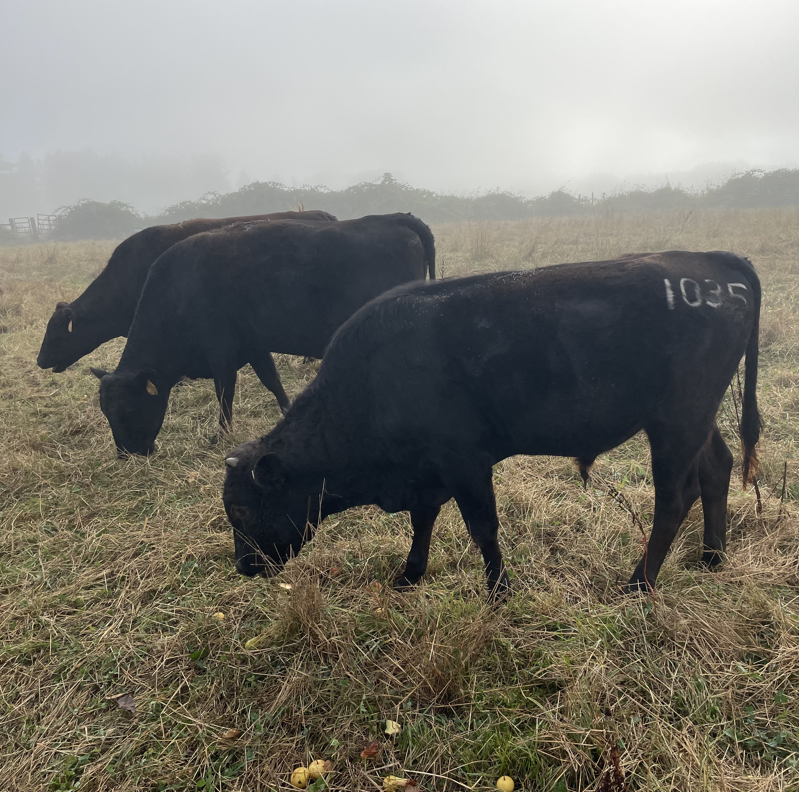
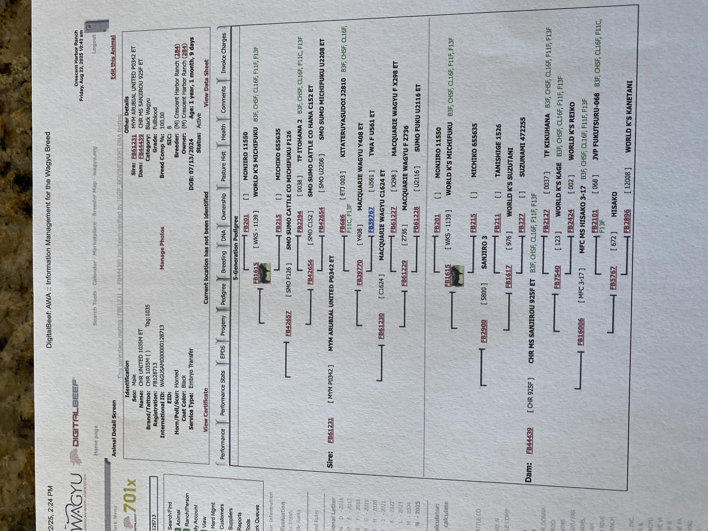
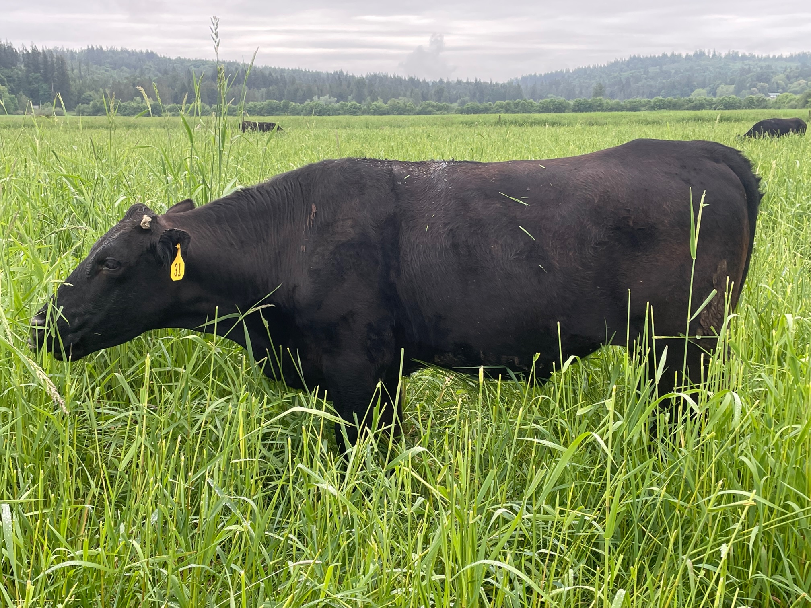

Raised by Joseph and Diana Hayes in the fertile Snoqualmie Valley
At Snoqualmie Valley Wagyu, we specialize in raising 100% grass-fed and grass-finished Wagyu beef on our organically managed farm. We believe in:
You may be wondering what "F3" means when we describe our cattle. F3 stands for third-generation crossbred Wagyu, representing a careful breeding program that combines the best of both worlds:
The Breeding Process:
Why F3 is ideal for grass-finishing:
Purebred vs. Crossbred Wagyu: While 100% purebred Wagyu (like those raised in Japan) produces the most extreme marbling, they traditionally require grain-finishing to achieve that result. Our F3 crossbreeding program allows us to raise cattle that develop exceptional marbling on grass alone - giving you the health benefits of grass-fed beef with the eating experience of premium Wagyu.
Our F3 Wagyu represents years of careful genetic selection, combining the legendary marbling and tenderness of Japanese Wagyu with cattle that thrive on the lush grasses of the Snoqualmie Valley.
At Broad Acres Farm, we're committed to raising beef in harmony with the environment. Our operation maintains an exceptionally low carbon footprint through regenerative farming practices:
The result? Beef raised with one of the smallest carbon footprints possible - nourished entirely by sunshine, rain, and the rich valley soil, with minimal inputs and virtually no food miles. When you choose Snoqualmie Valley Wagyu, you're supporting a truly sustainable, local food system.
Reservation Requirements:
Available Shares:
Final weights provided once hanging at Del Fox Meats
For 2026, we are finishing 3 steers, all 4 years old, on prime spring valley grass. We are offering these premium grass-fed and grass-finished F3 Wagyu steers for:
$7.50/lb (based on hanging weight)
Plus butcher fees: ~$1.25/lb for custom cutting, wrapping, and processing
(paid directly to Del Fox Meats)
Example: A quarter beef at 187 lbs (average) = $1,402.50 for beef + $233.75 for processing = $1,636.25 total
June 9th, 2026 - Three steers available
→ Contact Broad Acres Farm to reserve your share
Joseph Hayes
Phone: 206-366-5449
Email: broadacresfarm@gmail.com
Address: 27929 NE 100th St, Carnation, WA 98014
We are proud to announce we have acquired our next Wagyu bull, Rocket. He is just one year old and ranks in the top 10% for marbling and top 10% for ribeye among all Wagyu cattle!
With Rocket's elite genetics, we're ensuring that future generations of our F3 and F4 cattle will continue to deliver exceptional quality on our 100% grass-based system. We will be breeding him with Rodeo Star's offspring starting summer 2026, further advancing our closed-herd breeding program.


We will be offering a limited number of F3 and purebred Wagyu calves next summer at or below market price. Please reach out to us for details.
How much freezer space do I need?
A quarter beef (175-200 lbs) fits in approximately 4-5 cubic feet of freezer space. A half beef needs about 8-10 cubic feet, and a whole beef requires 16-20 cubic feet. A standard chest freezer (7 cubic feet) comfortably holds a quarter with room for other items.
How long will a quarter/half/whole beef last?
For a family of four eating beef 2-3 times per week, a quarter typically lasts 3-4 months, a half lasts 6-8 months, and a whole beef lasts 12-15 months. Grass-fed beef maintains excellent quality in the freezer for 12-18 months when properly wrapped.
What cuts are included?
Your share includes a variety of premium cuts: steaks (ribeye, New York strip, sirloin, tenderloin), roasts (chuck, rump, sirloin tip), ground beef, stew meat, and short ribs. You'll work directly with Del Fox Meats to customize your cutting instructions - choose steak thickness, ground beef package sizes, and whether you want specialty cuts like tri-tip or London broil.
How does pickup work?
Your beef will be custom-cut, vacuum-sealed, and frozen at Del Fox Meats in Mt. Vernon, WA. You'll pick up directly from their facility after receiving notification that your order is ready (typically 1-2 weeks after the butcher date). They'll have your beef packaged in boxes, ready to load into your vehicle. Bring coolers if you have a long drive home!
What's the difference between grass-fed and grass-finished?
Many beef operations label cattle as "grass-fed" even though they finish (fatten) them on grain for the last few months. Our cattle are 100% grass-fed and grass-finished - they never receive grain, corn, or supplemental feed. They're raised entirely on Snoqualmie Valley pasture grasses from birth through butchering, resulting in beef that's healthier, more flavorful, and better for the environment.
Why choose Wagyu over conventional beef?
Wagyu cattle are genetically predisposed to develop more intramuscular marbling (the fine threads of fat that make beef tender and flavorful). Even on our 100% grass diet, our F3 Wagyu develops significantly more marbling than conventional grass-fed beef, giving you the health benefits of grass-fed with exceptional tenderness and rich flavor. The eating experience is notably superior - more tender, more flavorful, and more satisfying.
Can I split a share with friends or family?
Absolutely! Many customers split a half or whole beef with others. You can coordinate your cutting instructions together, or ask Del Fox Meats to package and label the cuts separately for easy division at pickup.
Do you offer farm visits?
We welcome visitors! Contact us to schedule a farm tour. We love showing people our operation, introducing them to our cattle, and sharing our passion for regenerative agriculture.

→ Inquire about Snoqualmie Valley Wagyu Beef